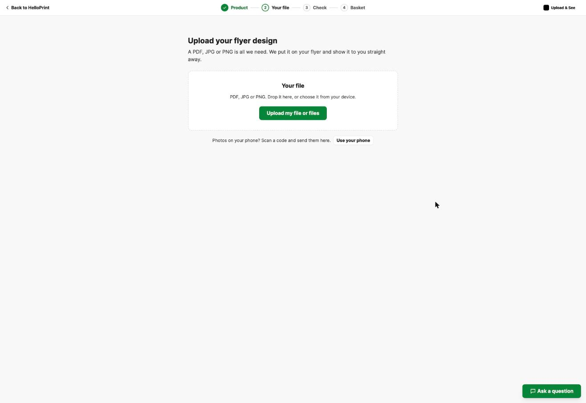
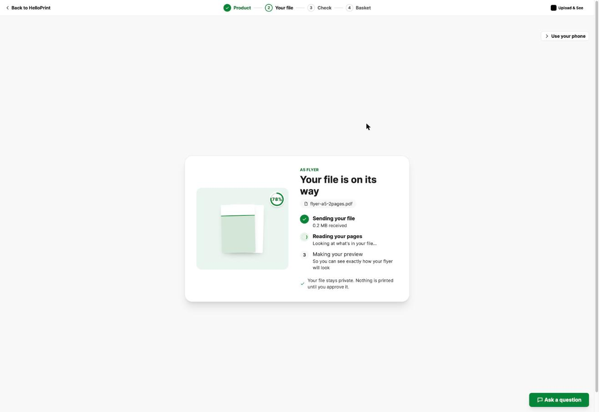
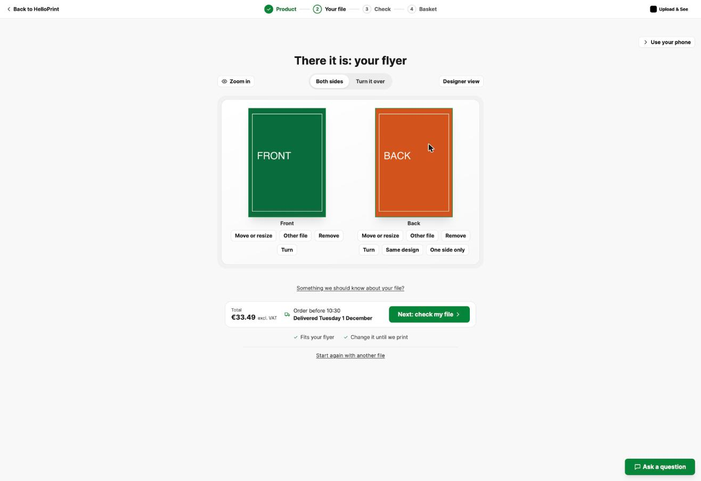
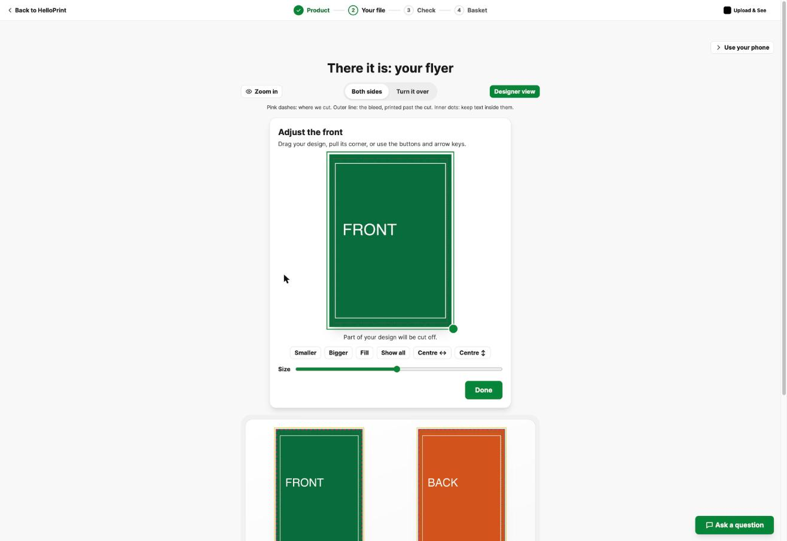
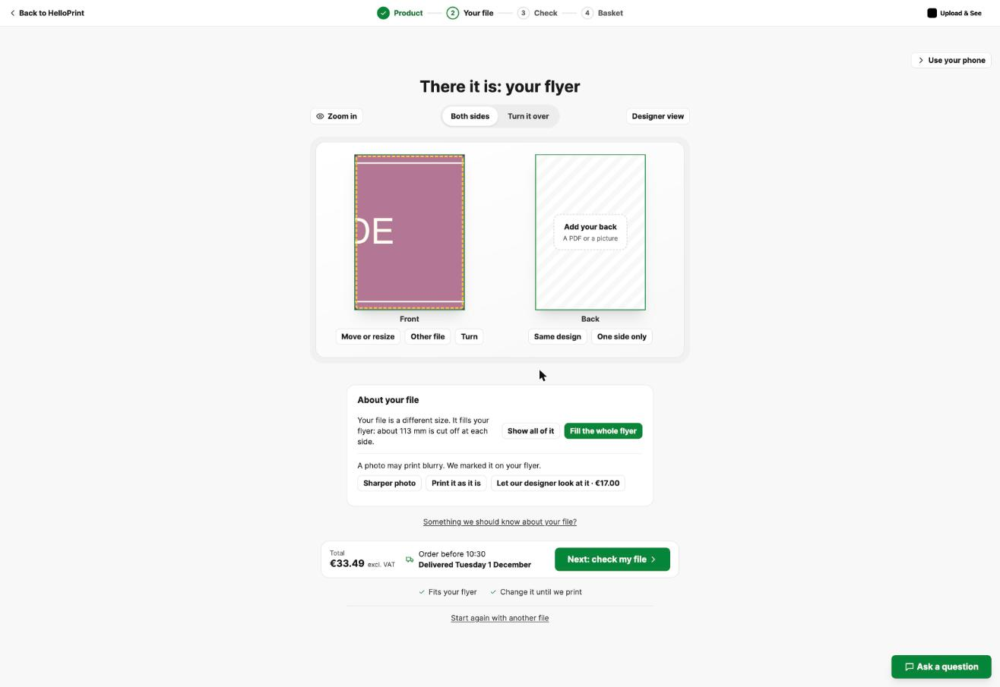
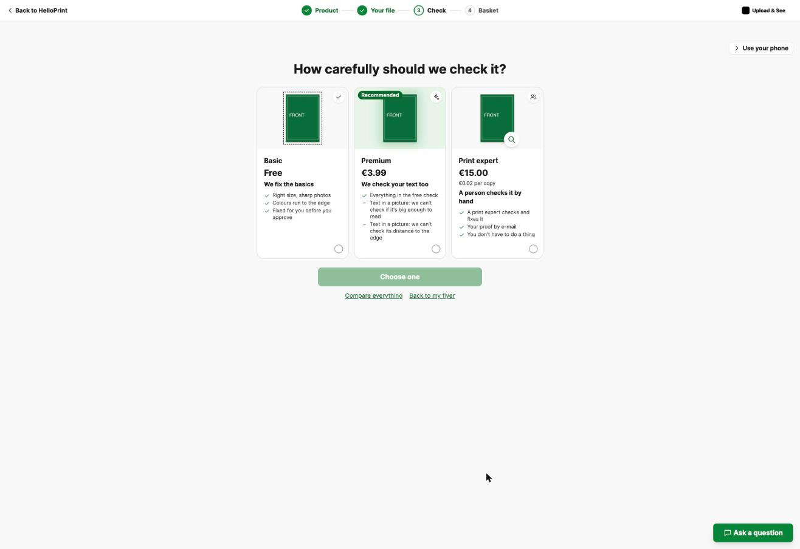
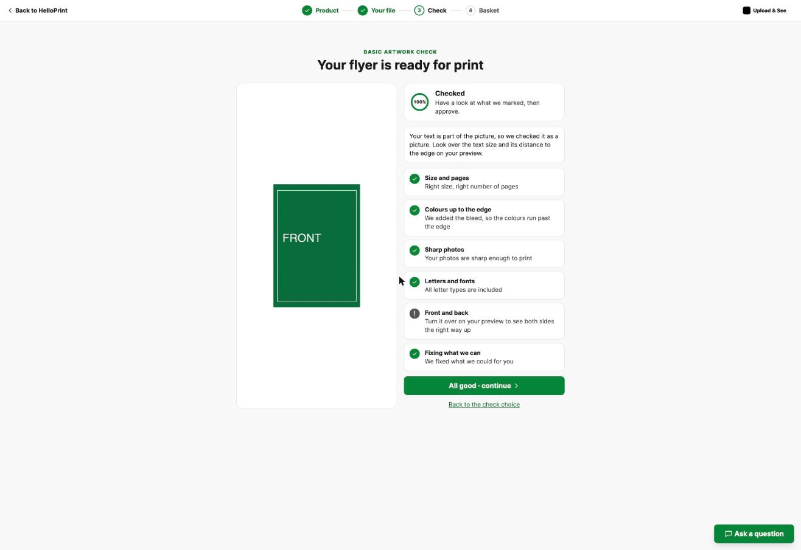
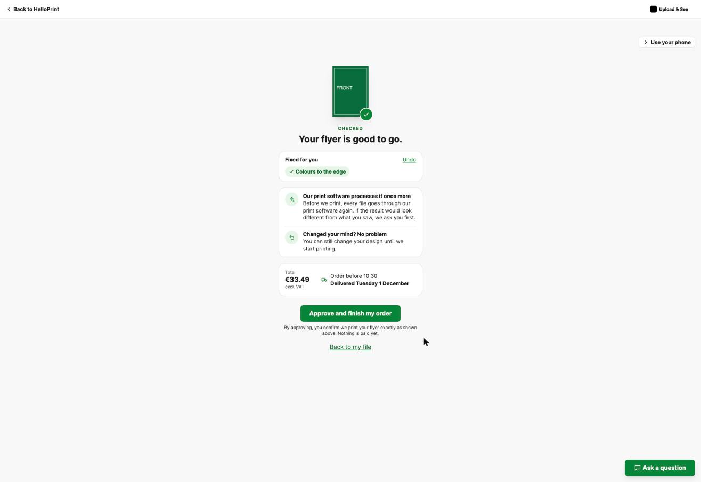
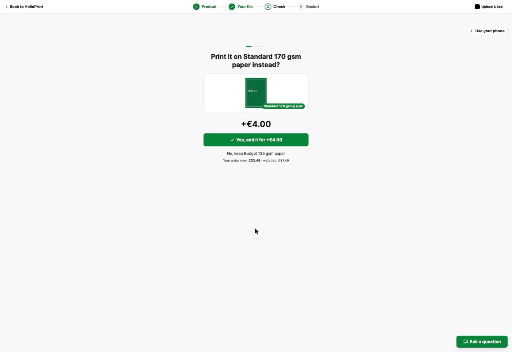
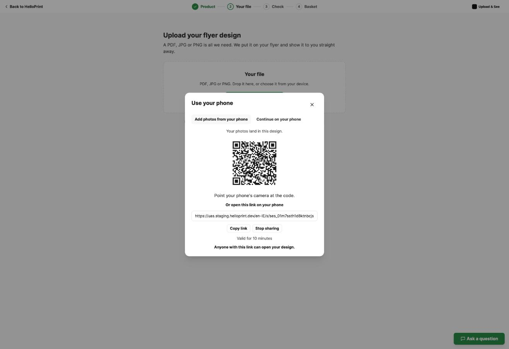

The idea is right: you see your own flyer straight away, both sides, before you pay. Fixes happen before you approve and can be undone. The tone is plain and human.
It's a separate world: its own header, buttons, radii and greens. And there are spots where it tells the customer something that isn't true ("Fits your flyer" while 113 mm is cut off).
Don't add new components. Every screen maps onto parts we already have. Promote two existing prototype parts (steps, file check) into the design system, fix the UX problems first, then reskin.










Landscape PNG on a portrait A5: the preview fills the flyer and cuts ~113 mm off each side; "Fill the whole flyer" is the active (green) choice, and under the bar it still says ✓ Fits your flyer.
If the file is turned 90°, offer Turn first ("Your file is landscape: turn it?"). Never make the destructive option the default. Only show the ticks under the bar when they're true.
Single-page file: the back shows "Add your back", and Next: check my file just works. The customer pays for double-sided and gets a blank back, or we have to ask afterwards.
Before Next, ask one question: Same design on the back · Add a back · Print one side only (show the price difference). Until then the primary is disabled ("Until the step is complete", our rule).
Upload & See: Basic / Premium €3.99 / Print expert €15 in one session, €4.99 / €17 in another (low-res file), "designer €17.00" in the preview. Cart today: Basic / Premium Check + Proof €10.99 / Deluxe €21.00 (CHECK_TIERS, grows with order lines).
One product, one name, one price logic, shown the same in Upload & See, cart and order confirmed. If the price depends on the file, say why ("your file needs more work").
Premium (Recommended) lists two "–" lines: "Text in a picture: we can't check…". The Compare table says Premium does check those two. The customer reads: the paid option doesn't work for me.
The card shows what you get. A limitation about this file goes on the result screen, once, as a point to look at. Table and cards say the same thing.
The customer has decided and clicks the final button, then gets three more questions. The delivery one is +€42.50 on a €33.49 order (more than double).
The decision comes before the button: on the result screen, one Upsell block (our .sum-up), and delivery as our Delivery tiles. After Approve go straight to the cart (+ toast "Added to cart").
The PDF already had 3 mm bleed. Still: "We added the bleed", "Fixed for you: Colours to the edge", and in Adjust "Part of your design will be cut off". That makes the customer doubt their own (correct) file, and our check.
Only report a fix that really happened. Bleed that is cut off as intended: "The outer 3 mm is cut off, as it should be."
Blurry photo: a neutral white card, three equal buttons (Sharper photo · Print it as it is · Let our designer look €17). Next keeps the same weight.
One action block per problem (to-do style): the issue in one line, the recommended fix as the button, the rest as outline or a link.
"Check" holds the choice, the result, approving and the upsells; the steps disappear on the approve screen; "Basket" is never a step here (it jumps to the cart).
Our checkout steps: Your file · Check · Approve, then the cart. Always visible, the current step light green.
Back: Move or resize · Other file · Remove · Turn · Same design · One side only. Six outline buttons, twice: busy, and you can't tell what matters.
Under each side one button "Edit" (opens Adjust) + a ⋮ menu with the rest (our rowMenu / drop menu). Same design and One side only move into the empty-back question.
The check result says to turn it over, but that screen only shows the front and has no turn control.
The result screen shows both sides (as in step 3), or the line links back.
| Upload & See today | Becomes (design system) | What changes |
|---|---|---|
| Top bar + steps | The desktop checkout header + .co-steps-n (round back, numbered steps) | HelloPrint logo instead of "Upload & See"; steps Your file · Check · Approve. Promote .co-steps-n from pages.css into components.css + a guide row. |
| Primary button | .btn.primary | 44 → 40 high, radius 8 → pill, 700 → 600, #008539 → --light-green. |
| Small outline buttons (30 high) | .btn.outline.small (32) or .pill | Off-grid 30 → 32; radius 8 → pill. |
| Drop field | Upload your artwork: .art-drop, --selected while dragging, .art-team under it | Same markup as the PDP upload popup. |
| Use your phone (link + top right) | .pill with icon under the field; dialog = .sheet (560 panel on desktop) with .seg for the two tabs, link in a .field, Copy as .pill | Not a ghost button top right on every screen. |
| Sending (3 steps, % ring) | .file-check list (ticks + dot) in the upload popup's progress | Drop the ring. Promote .file-check from pages.css (it's used twice now: proof page + here). |
| Both sides | Turn it over | .seg Segmented control | As is: two answers to one question. |
| Zoom in, Designer view | .pill / .pill.active when on | Designer view's legend as three short lines with a swatch each. |
| Preview stage | A card (--outline, --r-l) on --light-grey; zoom = the artwork popup we already have (cart, order confirmed) | Radius 16 → 10; border #e5e5e5 → --outline. |
| Actions per side | .btn.outline.small "Edit" + ⋮ rowMenu / .d-menu | 6 buttons → 2. |
| Adjust panel | .sheet (desktop 560 panel, mobile sheet) with .pills; Fill | Show all as .seg; Done = .btn.primary in .sheet-bar | No slider in the system: drop the slider, drag + Smaller/Bigger cover it. |
| About your file | .oc-act to-do block per problem, recommended fix .btn.primary.small, others .btn.outline.small | Only when something needs the customer. |
| Note to the printer | Text field in the approve step, as the proof page's #sheet-approve | No separate Send note. |
| Total + delivery bar | Desktop .d-bar (fixed order bar), mobile .buy-bar (Sticky bar) | "Estimated … — latest …"; the ticks under it only when true. |
| Check choice (3 cards) | Radio cards (.qrow / .addr-list) with the content of the cart's "See our 3 options" popup; Recommended as the calm green bar in the card (Rec D) | White chosen card with 2px light green border, never tinted (decided 11-06). Recommended preselected. |
| Compare everything | .spec-fold + .fold-table | Same content as the cards. |
| Checking + result | .file-check (tick = fine, orange dot = look at this) + .art-calm for "good to go" | Both sides visible; Undo as .link on the fix row. |
| Upsells | Upsell block .sum-up (switch + price) on the result screen; delivery = Delivery tiles | Before Approve, at most one block. |
| Recommended / labels | badgeHtml() (orange commercial, grey information) | No tinted headers. |
| Ask a question | The shop's chat widget | One way to reach us, everywhere. |
| Confirmation | .toast "Added to cart" | — |
:root variables (--color-primary #008539, --color-border #e5e5e5, --radius-card 12px, --btn-radius 9999px, but the buttons use 8px). That makes the first step cheap: point those variables at tokens.css (--light-green, --line/--outline, --r-l, --r-pill, --t-*/--lh-*) and most of the look follows without touching a screen. Body background #f8f8f8 → white or --light-grey, as in the checkout.A sketch page with options side by side for the screens where the UX changes, not the reskin: (a) the preview with the empty back and a file that doesn't fit, (b) check choice + result as one screen or two, (c) where the upsell goes. Only design-system classes, no new CSS. → sketches/upload-see-sketch.html · close to staging, clickable, every interaction: sketches/upload-see-map.html
prototype/upload.html (the six screens, PDP data from products.js), opened from the PDP's third design option. Switch "Upload: popup (D) | Upload & See" so we can compare and go back. Promote .co-steps-n and .file-check into the design system with their guide rows in the same change.
This component map + the token map as the brief: step 1 tokens (cheap, big effect), step 2 swap per screen to the design-system parts, step 3 the P1 fixes (logic, not styling: the empty back, rotate before crop, true ticks, one price).
My pick: fix the five P1s in phase 0–1, even before any styling. A nice-looking flow that crops a file or prints a blank back costs more than one that looks different.